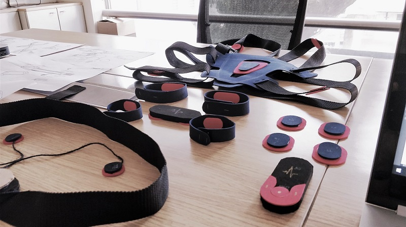

Cardio+
Medical Device Design, IoT, Cardiac Care
Cardio+ is a personal ECG monitoring device designed for citizens living in Urban Areas who are health cautious and need better and personalized heart monitoring and care. Mostly, they are working professionals who are willing to adapt technology into their lifestyles for better treatment and wellbeing in their hectic work schedules.
User Studies and Interviews to understand the user requirements and also their aspirations.
Design Methodology
Problem Perception of Current ECG Devices
Design Directions and Insights from Research
Initial Ideas and Brainstorming
Emotional Design
Medical device designers and developers have a responsibility to deliver a positive medical experience through the device. We cannot focus solely on fixing the problem efficiently. We need to address the stress, fear, and perhaps embarrassment the patient might feel.
Inspiration was taken from natural elements in the nature which evoke the emotion of purity, clean, honest and innocence. These emotions are important to drive the aesthetics of a medical product as its appeal should be warm, welcoming and friendly. Human beings relate to these elements to accept the product as friendly and welcoming.

Quick Mockups to try Multiple Device Configuration


Final Concept
Cardio+ includes a wearable electronic device and a mobile application for smartphones to record, view, share among other features.
The wearable electronic device is used with a flexible Silicone neck-band which is detachable. The device is worn inside the clothing. The materials for the device are bio-compatible polycarbonate for the base and the top is a soft textured PU plastic.
Four Capacitive type electrodes for each limb location are proposed as they completely eliminate the need to use conductive gel. The electrodes are to be used along with disposable skin friendly adhesives which are custom made. 3M is one of the major skin friendly adhesives which manufactures a large variety of adhesives and foams suitable for varied skin types, sensitivity, duration of use, water resistant and easy removal.
The electronic device has a main control button and a mode toggle switch. The main control button is located on the front facing surface, which is used to power on the device , take ECG readings with one touch and check battery level with a 3 seconds long press. The main button surface is textured to get a tactile feedback while pressing it, even under clothing like a t-shirt or a shirt.
The mode toggle switch is a two way switch to select the two modes namely continuous ECG and instant ECG, depending on the usage prescribed by the doctor. The device has 4 LEDs for notifications such as progress of ECG reading cycle, battery level and showing errors like no signal and other breakdowns. The LEDs are placed on the upward surface, so the user may view it without holding / lifting the device.